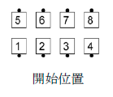
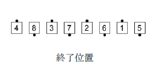

二人のダンサーが同一位置で動作を終わってこの位置に止まり、互いに反対方向を向く場合は 右手のミニウエイブを作る。 もし調整が必要な場合は（一人のダンサーであるべき隊形に二人の ダンサーが横に並ぶので）、一緒に動いている組の外方向へ横側に調整する。
コーラーは二人のダンサーが同一方向を向いて終わり、または直角で終わり同一位置に止まるコ ールをすべきではない。
例： Circulate 1 1/2 (サーキュレート ワンス アンド ア ハーフ)
 
© １９９４，２０００-２０１３ CALLERLAB、国際スクエアダンスコーラーズ協会 再印刷、再出版、使用料の発生しない配布物の製作はこの文章表示を条件にこれを許可する。 使用料の発生しないインターネットでの刊行はこの文章表示を条件にこれを許可する。 使用料の発生しない一部または全ての引用はこの文章表示を条件にこれを許可する。 いかなる配布物製作または刊行においても本書内の情報は変更されまた改訂されてはならない。